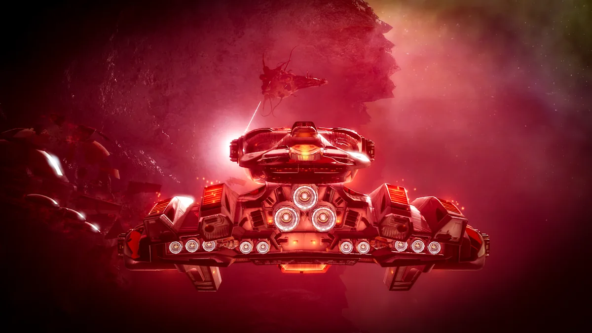

Fractured Skies · Rogue Drone Outbreaks
Rogue Drone Outbreaks
Rogue Drone infestations are spreading through Gallente Federation space. Clear infested sites, recover Outbreak Initiation Threads, and watch for roaming Drone fleets.

Rogue Drone outbreak. Image: CCP Games / Fenris Creations. Click to enlarge.
Outbreaks at a glance
The short version before you undock.
Where
Rogue Drone outbreaks are common throughout Gallente Federation space. Find them in the Interstellar Events section of the Opportunities window.
Objective
Complete infested sites to shut down the outbreak.
Loot
Infested sites drop Outbreak Initiation Threads. Sell them to corporation buy orders.
Danger
Rogue Drone fleets roam systems with active outbreaks — not just the sites themselves.
What are Rogue Drone Outbreaks?
Rogue Drone Outbreaks are regional infestations in Gallente Federation space. They arrive with Fractured Skies as the empires race to close the gap in Conquest technology.
Clearing infested sites shuts down an outbreak, and the sites drop Outbreak Initiation Threads that can be sold to corporation buy orders. The systems themselves are not safe: Rogue Drone fleets roam active outbreak space.
Where to find them
Three steps from dock to an active outbreak.
1. Open Opportunities
Go to the Interstellar Events section of the Opportunities window.
2. Head to Gallente space
The notes describe outbreaks as common throughout Gallente Federation space.
3. Check the system
Find the infested sites and keep an eye out for roaming Rogue Drone fleets while you travel.
Infested sites
Completing the sites is how you shut down the outbreak.
Clear to shut down
Completing infested sites is the stated way to shut down an outbreak.
Rogue Drone NPCs
Expect Rogue Drone enemies. The notes do not publish site names, difficulty, fleet size or spawn rates.
Check the loot
Recover Outbreak Initiation Threads from the sites and check every wreck or container.
Bring a replaceable ship
Treat the first runs as reconnaissance. Roaming fleets can catch you outside the site.
Outbreak Initiation Threads
Outbreak Initiation Threads are the loot item tied to the event. They can be looted from infested sites and sold to various corporation buy orders.
Loot them
Recover threads from infested sites. The notes do not list a drop rate or a fixed number per site.
Sell to corporations
Various corporation buy orders purchase the threads. Check the market buy orders in your region.
Watch the price
No fixed ISK value is published. Compare buy orders before hauling a stack to market.
Roaming Rogue Drone fleets
The site is not the only danger. Outbreak systems have roaming fleets.
Scout the route
Check the route into the outbreak system before committing a valuable ship.
Watch local
Roaming fleets are not tied to a site. Keep an eye on local and your surroundings while travelling.
Don't gate-sit
Avoid sitting on gates or in open space with a full cargo of threads.
Bring a backup plan
Use a ship and fit you can replace. The event is not worth losing a doctrine hull over.
The farm loop
A simple repeatable loop from finding an outbreak to selling the threads.
Farm loop
How to run an outbreak
Find an active outbreak, clear the sites, recover the threads and sell them to corporation buy orders.
- 1. Find — Opportunities → Interstellar Events
- 2. Travel — Gallente Federation space
- 3. Clear — infested sites to shut down the outbreak
- 4. Loot — Outbreak Initiation Threads
- 5. Sell — corporation buy orders
- 6. Watch — roaming Rogue Drone fleets
What we don't know yet
The expansion notes are short on the details that matter for farming.
Still to confirm
What CCP has not published
Treat drop rates, site difficulty and thread prices as unknown until the client or market provides data.
- Site types — named sites, difficulty and fleet size
- Drop rates — thread chance per site or container
- Thread value — corporation buy-order prices
- Outbreak lifecycle — duration, reset and whether they spread
- Other rewards — any loot beyond the threads
FAQ
What are Rogue Drone Outbreaks?
Regional Rogue Drone infestations in Gallente Federation space. Completing infested sites shuts down the outbreak.
Where do they spawn?
Throughout Gallente Federation space. The notes do not list specific systems.
How do I find them?
Open the Opportunities window and check the Interstellar Events section.
What do I do at an infested site?
Complete the site to help shut down the outbreak, and recover Outbreak Initiation Threads from the loot.
What are Outbreak Initiation Threads?
Loot items from infested sites. They can be sold to various corporation buy orders.
Who buys Initiation Threads?
Various corporation buy orders. Check the market buy orders in your region for the current price.
Are there roaming fleets?
Yes. Rogue Drone fleets roam systems with active outbreaks, so the danger is not limited to the site itself.
Can I solo them?
The notes do not specify difficulty or fleet size. Treat the first runs as reconnaissance and bring a ship you can replace.
What rewards should I expect?
The notes only confirm Outbreak Initiation Threads and corporation buy orders. Exact loot tables are not published.
What is still unknown?
Exact site types, difficulty, spawn rates, thread drop rates, buy-order prices, outbreak duration and any additional rewards.
Source
Primary source
Fractured Skies Expansion Notes — Rogue Drone Outbreaks
EVE Online Team · 6 November 2026